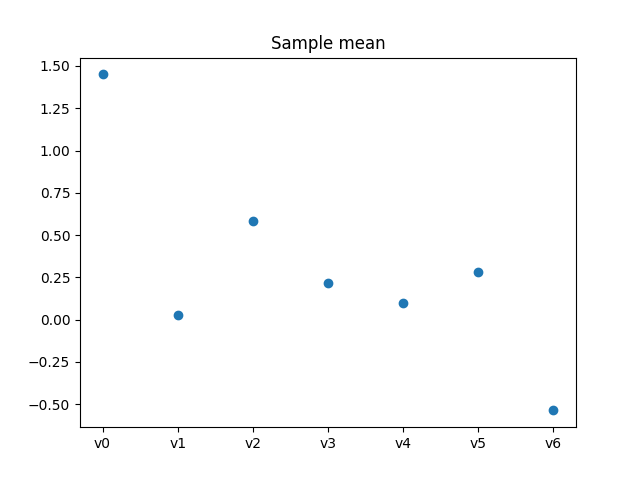
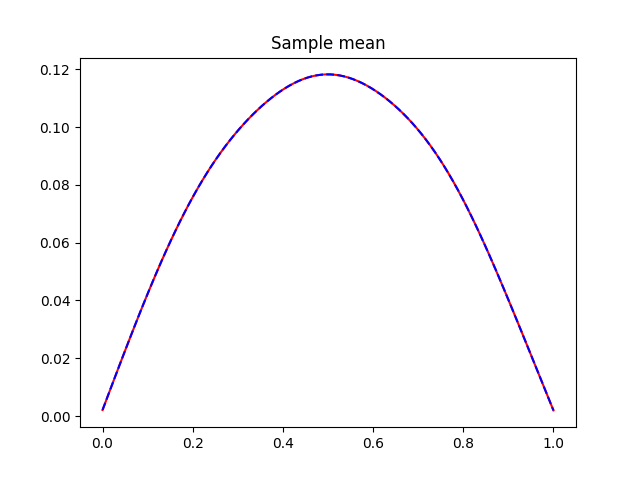
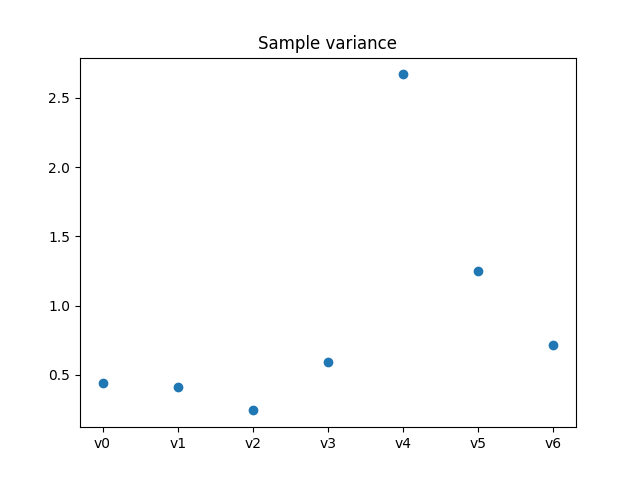
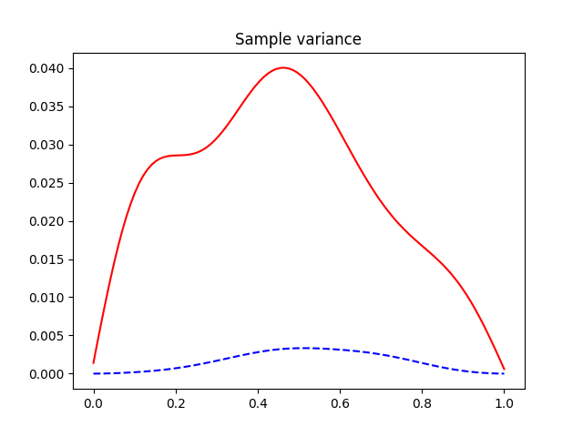
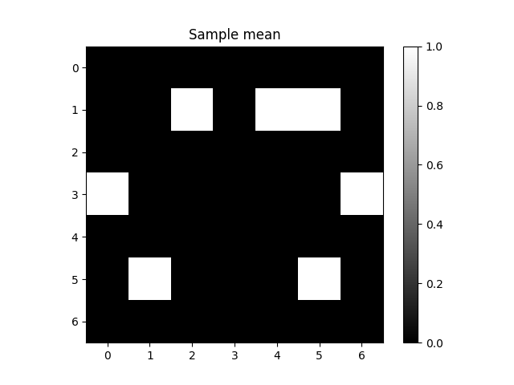
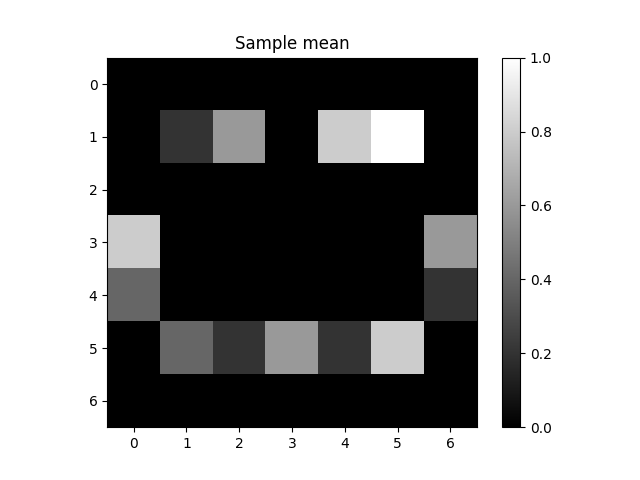
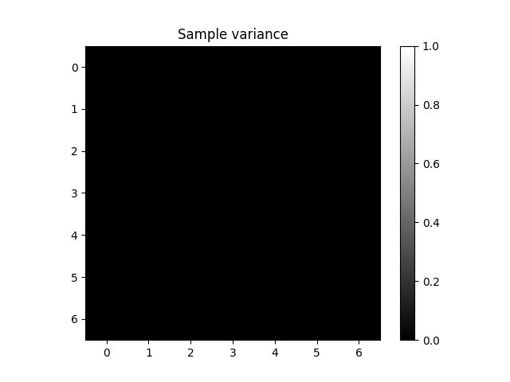
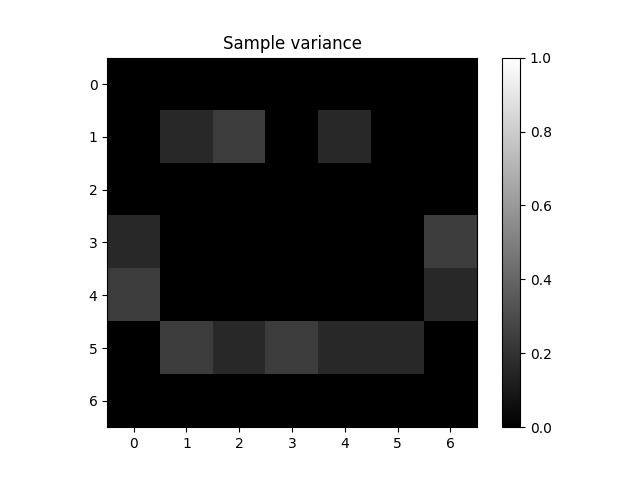

Note
Go to the end to download the full example code.
Support vector representation of function values in CUQIpy geometries and samples#
In this demo, we illustrate the utility of an introduced representation of variables in CUQIpy (besides the already introduced parameter and function value representation). This representation, is a vector representation of the function values. The function values generally can be an n-dimensional array or any other type of object. When needed and when possible, this introduced representation is used to represent the function values as a vector (1D array). In particular, it is used to represent the function values of samples in a vector format. This is useful for computing statistics on the function values of samples.
Import the necessary modules#
import cuqi
import numpy as np
import matplotlib.pyplot as plt
Set the seed for reproducibility
np.random.seed(0)
Create a 1D and a mapped 2D geometries#
Create a 1D KLExpansion geometry with 7 modes (and hence 7 KL expansion coefficients) and a 100-point grid defined on the interval [0, 1]
geom_1D = cuqi.geometry.KLExpansion(
grid=np.linspace(0, 1, 100),
num_modes=7
)
Create a mapped 2D Image geometry. We first define a threshold map that gives 1 if x is greater than or equal to 1. Otherwise, it gives zero. Then we create the geometry
def my_map(x):
return np.where(x >= 1, 1, 0)
geom_2D = cuqi.geometry.MappedGeometry(
cuqi.geometry.Image2D((7, 7)),
map=my_map)
Query the geometries fun_is_array property
print(geom_1D.fun_is_array)
print(geom_2D.fun_is_array)
True
True
This property indicates whether the function value representation is an array (not necessarily a 1D array) or not.
Query the number of parameters for both geometries
print(geom_1D.par_dim)
print(geom_2D.par_dim)
7
49
Query the shape of the function value representation for both geometries
print(geom_1D.fun_shape)
print(geom_2D.fun_shape)
(100,)
(7, 7)
Query the shape of the vector representation of the function values for both geometries
print(geom_1D.funvec_shape)
print(geom_2D.funvec_shape)
(100,)
(49,)
Create random samples corresponding to each geometry#
Create samples of random parameter values that correspond to each geometry. For the 1D geometry, we create 5 random samples from a Gaussian distribution with a zero mean and a variance of 1. These samples are samples of the KL coefficients equipped with the KL geometry object.
x_kl = cuqi.distribution.Gaussian(np.zeros(geom_1D.par_dim), 1, geometry=geom_1D)
samples_1D = x_kl.sample(5)
For the 2D geometry, we create 5 random samples from a Gaussian distribution with a “smile” image mean and a 0.01 variance. The smile image given by the 7 by 7 array below
smile = np.array([[0, 0, 0, 0, 0, 0, 0],
[0, 1, 1, 0, 1, 1, 0],
[0, 0, 0, 0, 0, 0, 0],
[1, 0, 0, 0, 0, 0, 1],
[1, 0, 0, 0, 0, 0, 1],
[0, 1, 1, 1, 1, 1, 0],
[0, 0, 0, 0, 0, 0, 0]])
x = cuqi.distribution.Gaussian(smile.ravel(), 0.01, geometry=geom_2D)
samples_2D = x.sample(5)
We plot the smile for illustration
plt.imshow(smile, cmap='Greys_r')
<matplotlib.image.AxesImage object at 0x7fa8ac1799a0>
We plot a 2D sample (the sample with index 4 in this case)
samples_2D.plot(4)
[<matplotlib.image.AxesImage object at 0x7fa8b141b440>]
Obtain the corresponding samples of function values (funvals)#
samples_1D.funvals
samples_2D.funvals
CUQIpy Samples:
---------------
Ns (number of samples):
5
Geometry:
MappedGeometry(Image2D[49: (7, 7)])
Shape:
(7, 7, 5)
Samples:
[[[0. 0. 0. 0. 0.]
[0. 0. 0. 0. 0.]
[0. 0. 0. 0. 0.]
[0. 0. 0. 0. 0.]
[0. 0. 0. 0. 0.]
[0. 0. 0. 0. 0.]
[0. 0. 0. 0. 0.]]
[[0. 0. 0. 0. 0.]
[0. 0. 0. 0. 1.]
[0. 1. 1. 0. 1.]
[0. 0. 0. 0. 0.]
[0. 1. 1. 1. 1.]
[1. 1. 1. 1. 1.]
[0. 0. 0. 0. 0.]]
[[0. 0. 0. 0. 0.]
[0. 0. 0. 0. 0.]
[0. 0. 0. 0. 0.]
[0. 0. 0. 0. 0.]
[0. 0. 0. 0. 0.]
[0. 0. 0. 0. 0.]
[0. 0. 0. 0. 0.]]
[[0. 1. 1. 1. 1.]
[0. 0. 0. 0. 0.]
[0. 0. 0. 0. 0.]
[0. 0. 0. 0. 0.]
[0. 0. 0. 0. 0.]
[0. 0. 0. 0. 0.]
[1. 1. 1. 0. 0.]]
[[1. 0. 0. 0. 1.]
[0. 0. 0. 0. 0.]
[0. 0. 0. 0. 0.]
[0. 0. 0. 0. 0.]
[0. 0. 0. 0. 0.]
[0. 0. 0. 0. 0.]
[0. 0. 0. 1. 0.]]
[[0. 0. 0. 0. 0.]
[0. 0. 1. 1. 0.]
[0. 0. 0. 1. 0.]
[1. 1. 1. 0. 0.]
[0. 0. 0. 1. 0.]
[1. 1. 0. 1. 1.]
[0. 0. 0. 0. 0.]]
[[0. 0. 0. 0. 0.]
[0. 0. 0. 0. 0.]
[0. 0. 0. 0. 0.]
[0. 0. 0. 0. 0.]
[0. 0. 0. 0. 0.]
[0. 0. 0. 0. 0.]
[0. 0. 0. 0. 0.]]]
Note that the funvals property of the Samples class returns a Samples object
query the shape of the .funvals property for both samples objects
print("samples_1D.funvals.shape")
print(samples_1D.funvals.shape)
print("samples_2D.funvals.shape")
print(samples_2D.funvals.shape)
samples_1D.funvals.shape
(100, 5)
samples_2D.funvals.shape
(7, 7, 5)
Note that for the 2D geometry, the shape of the funvals is (7, 7, 5). This is because the function value representation is a 2D array.
query the shape of the .funvals.vector property for both samples objects
print("samples_1D.funvals.vector.shape")
print(samples_1D.funvals.vector.shape)
print("samples_2D.funvals.vector.shape")
print(samples_2D.funvals.vector.shape)
samples_1D.funvals.vector.shape
(100, 5)
samples_2D.funvals.vector.shape
(49, 5)
Now for both geometries, the samples in the converted Samples object is a two dimensional arrays. In this case, executing the funvals property leads to calling the par2fun method of the geometry to convert the parameter values to function values. Then executing the vector property leads to calling the fun2vec method of the geometry (if implemented) to convert the function values to a vector representation of these values.
query the shape of the .vector property for both geometries
print("samples_1D.vector.shape")
print(samples_1D.vector.shape)
print("samples_2D.vector.shape")
print(samples_2D.vector.shape)
samples_1D.vector.shape
(7, 5)
samples_2D.vector.shape
(49, 5)
For samples_1D, we query the is_par and is_vec properties for all representations of the samples
print("samples_1D.is_par")
print(samples_1D.is_par)
print("samples_1D.is_vec")
print(samples_1D.is_vec)
print("samples_1D.vector.is_par")
print(samples_1D.vector.is_par)
print("samples_1D.vector.is_vec")
print(samples_1D.vector.is_vec)
print("samples_1D.funvals.is_par")
print(samples_1D.funvals.is_par)
print("samples_1D.funvals.is_vec")
print(samples_1D.funvals.is_vec)
print("samples_1D.funvals.vector.is_par")
print(samples_1D.funvals.vector.is_par)
print("samples_1D.funvals.vector.is_vec")
print(samples_1D.funvals.vector.is_vec)
samples_1D.is_par
True
samples_1D.is_vec
True
samples_1D.vector.is_par
True
samples_1D.vector.is_vec
True
samples_1D.funvals.is_par
False
samples_1D.funvals.is_vec
True
samples_1D.funvals.vector.is_par
False
samples_1D.funvals.vector.is_vec
True
Note that for this 1D geometry, the is_vec property is always True. This is because the function value representation is a 1D array.
We do the same for samples_2D
print("samples_2D.is_par")
print(samples_2D.is_par)
print("samples_2D.is_vec")
print(samples_2D.is_vec)
print("samples_2D.vector.is_par")
print(samples_2D.vector.is_par)
print("samples_2D.vector.is_vec")
print(samples_2D.vector.is_vec)
print("samples_2D.funvals.is_par")
print(samples_2D.funvals.is_par)
print("samples_2D.funvals.is_vec")
print(samples_2D.funvals.is_vec)
print("samples_2D.funvals.vector.is_par")
print(samples_2D.funvals.vector.is_par)
print("samples_2D.funvals.vector.is_vec")
print(samples_2D.funvals.vector.is_vec)
samples_2D.is_par
True
samples_2D.is_vec
True
samples_2D.vector.is_par
True
samples_2D.vector.is_vec
True
samples_2D.funvals.is_par
False
samples_2D.funvals.is_vec
False
samples_2D.funvals.vector.is_par
False
samples_2D.funvals.vector.is_vec
True
Note that the property samples_2D.funvals.is_vec is false, but after converting the function values to a vector representation using the vector property, the property samples_2D.vector.funvals.vector.is_vec is true.
Computing statistics on parameter and on function values for samples (the 1D geometry case)#
Compute and plot mean on parameter values and on function values. Note that the default behavior of the plot_mean method is to compute the mean on the parameters then apply the par2fun map on the mean. Passing the argument plot_par=True results in plotting the mean of the original parameter values (the KL expansion coefficients).
print("samples_1D.plot_mean with plot_par=True")
plt.figure()
samples_1D.plot_mean(plot_par=True)
print("samples_1D.plot_mean")
plt.figure()
samples_1D.plot_mean(color='r')
print("samples_1D.funvals.plot_mean")
samples_1D.funvals.plot_mean(color='b', linestyle='--')
- 
- 
samples_1D.plot_mean with plot_par=True
samples_1D.plot_mean
samples_1D.funvals.plot_mean
[<matplotlib.lines.Line2D object at 0x7fa8b13d5400>]
Note that in the second figure, the mean in both cases is the same, i. e., applying the KL map (the linear combination of the of the KL expansion basis vectors weighted by the given KL coefficients) on the average KL coefficients is the same as applying the KL map on each sample then computing the mean of the result.
Compute variance on parameter values and on function values
print("samples_1D.plot_variance with plot_par=True")
plt.figure()
samples_1D.plot_variance(plot_par=True)
print("samples_1D.plot_variance")
plt.figure()
samples_1D.plot_variance(color='r')
print("samples_1D.funvals.plot_variance")
samples_1D.funvals.plot_variance(color='b', linestyle='--')
- 
- 
samples_1D.plot_variance with plot_par=True
samples_1D.plot_variance
samples_1D.funvals.plot_variance
[<matplotlib.lines.Line2D object at 0x7fa8ae305850>]
Here in the second figure, the results of computing the variance differ in both cases. Additionally, computing the variance of the parameters then applying the KL map can result in negative values.
Computing statistics on parameter and on function values for samples (the 2D geometry case)#
Compute mean on parameter values, function values, and vector representation of function values
print("samples_2D.plot_mean")
plt.figure()
samples_2D.plot_mean(vmin=0, vmax=1)
plt.colorbar()
print("samples_2D.funvals.plot_mean")
plt.figure()
samples_2D.funvals.plot_mean(vmin=0, vmax=1)
plt.colorbar()
print("samples_2D.funvals.vector.plot_mean")
plt.figure()
samples_2D.funvals.vector.plot_mean(vmin=0, vmax=1)
plt.colorbar()
- 
- 
samples_2D.plot_mean
samples_2D.funvals.plot_mean
samples_2D.funvals.vector.plot_mean
<matplotlib.colorbar.Colorbar object at 0x7fa8b01fb9e0>
Compute variance on parameter values, function values, and vector representation of function values
print("samples_2D.plot_variance")
plt.figure()
samples_2D.plot_variance(vmin=0, vmax=1)
plt.colorbar()
print("samples_2D.funvals.plot_variance")
plt.figure()
samples_2D.funvals.plot_variance(vmin=0, vmax=1)
plt.colorbar()
print("samples_2D.funvals.vector.plot_variance")
plt.figure()
samples_2D.funvals.vector.plot_variance(vmin=0, vmax=1)
plt.colorbar()
- 
- 
samples_2D.plot_variance
samples_2D.funvals.plot_variance
samples_2D.funvals.vector.plot_variance
<matplotlib.colorbar.Colorbar object at 0x7fa8afffbe90>
Note that computing the samples mean then applying the thresholding, the first case, is not equivalent to applying the thresholding on the samples then computing their mean (the latter two cases). Similar observation can be made about computing the variance. In fact, the variance in the first case is just zero because the parameter sample variance (before thresholding) is smaller than 1, the thresholding, then, forces all the values to zero. Also note that, in this case, we are able to compute the statistics directly on the function values, but for some geometries, this may not be possible and we may need to use the vector representation of the function values to compute the statistics.
Plotting samples#
Plot samples from samples_2D:
print("samples_2D.plot")
plt.figure()
samples_2D.plot([1, 4])
samples_2D.plot
[<matplotlib.image.AxesImage object at 0x7fa8afee7aa0>, <matplotlib.image.AxesImage object at 0x7fa8afd5b9e0>]
Plot samples from samples_2D.funvals:
print("samples_2D.funvals.plot")
plt.figure()
samples_2D.funvals.plot([1, 4])
samples_2D.funvals.plot
[<matplotlib.image.AxesImage object at 0x7fa8afdba810>, <matplotlib.image.AxesImage object at 0x7fa8b00e6f00>]
Plot samples from samples_2D.funvals.vector:
print("samples_2D.funvals.vector.plot")
plt.figure()
samples_2D.funvals.vector.plot([1, 4])
samples_2D.funvals.vector.plot
[<matplotlib.image.AxesImage object at 0x7fa8affcca70>, <matplotlib.image.AxesImage object at 0x7fa8afc6bec0>]
The results are the same in all the three cases. Note that for the first case, the default behavior of the plot method is to convert the samples to the function values and then plot them. If one is interested in plotting the original parameter values, one can pass the argument plot_par=True to the plot method.
print("samples_2D.plot([1, 4], plot_par=True)")
plt.figure()
samples_2D.plot([1, 4], plot_par=True)
samples_2D.plot([1, 4], plot_par=True)
[<matplotlib.lines.Line2D object at 0x7fa8afcad730>, <matplotlib.lines.Line2D object at 0x7fa8afccc0e0>]
Total running time of the script: (0 minutes 1.090 seconds)